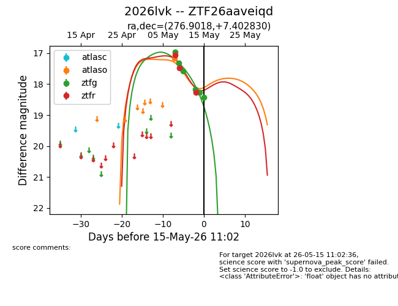
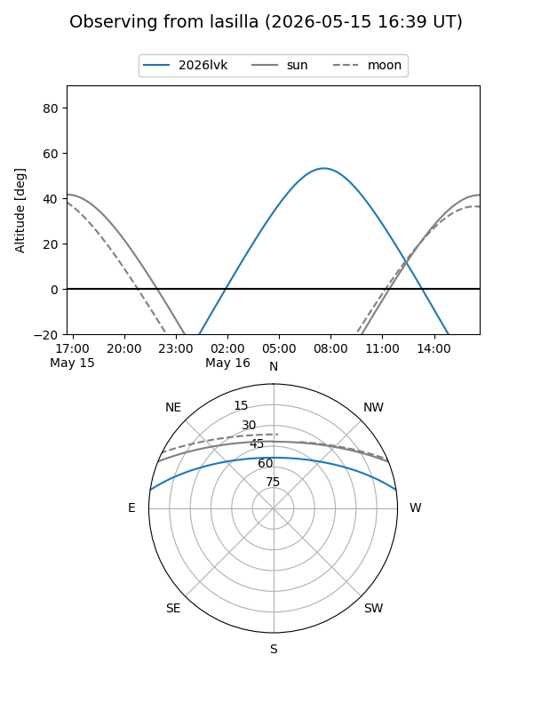
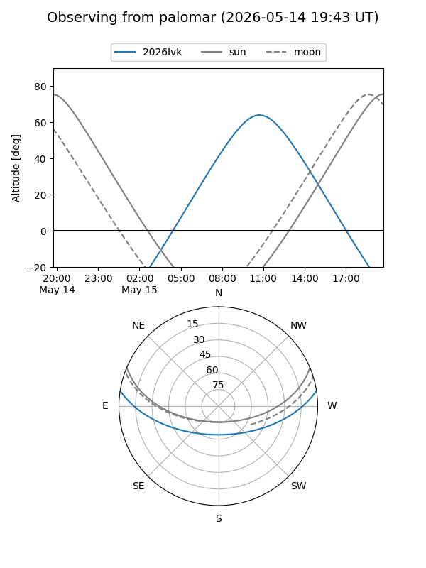
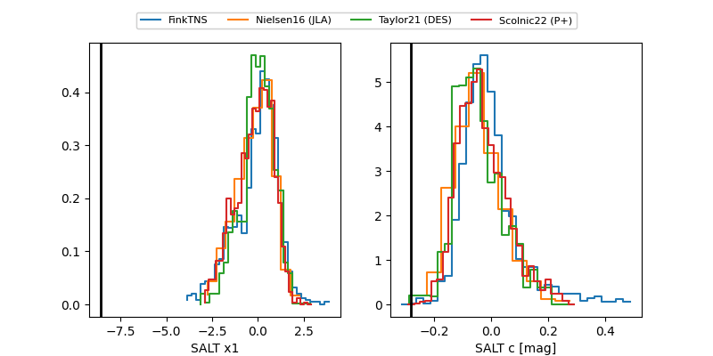

2026lvk
Target 2026lvk at 2026-05-15 11:05
Aliases and brokers:
FINK: link
Lasair: link
ALeRCE: link
TNS: link
YSE: link
alt names
ZTF26aaveiqd (ztf,fink_ztf)
2026lvk (tns,yse)
Coordinates:
equatorial (ra, dec) = 276.9018,+7.40283
equatorial (HMS+DMS) = 18:27:36.44,+07:24:10.19
galactic (l, b) = (36.8606,+8.64755)
Flags:
Photometry:
last atlaso=17.16, ztfg=18.42, ztfr=18.27
1 atlaso, 6 ztfg, 3 ztfr detections
Lightcurve

Visibility


Additional plots
